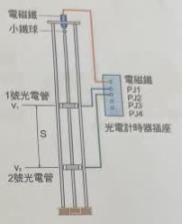
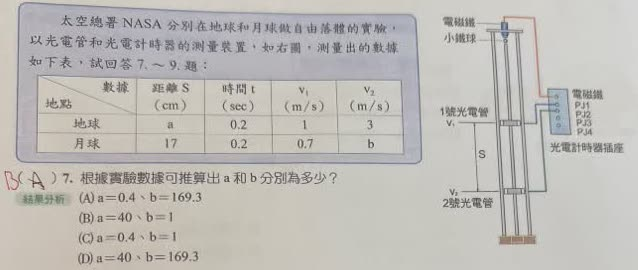

分享原卷｜第7題
完整原題
作答所需文章／材料
太空總署NASA分別在地球和月球做自由落體的實驗，以光電管和光電計時器的測量裝置，如右圖，測量出的數據如下表，試回答7～9題：| 地點 | 距離S（cm） | 時間t（sec） | v₁（m/s） | v₂（m/s） |
|---|---|---|---|---|
| 地球 | a | 0.2 | 1 | 3 |
| 月球 | 17 | 0.2 | 0.7 | b |

根據實驗數據可推算出a和b分別為多少？
(A) a＝0.4、b＝169.3
(B) a＝40、b＝1
(C) a＝0.4、b＝1
(D) a＝40、b＝169.3
先想一想，再查看答案、解說與原圖
原卷作答：A（紅筆訂正B）
正確答案：(B) a＝40、b＝1。
逐項解析
| 選項與原句 | 判讀 | 句意與判斷理由 |
|---|---|---|
| (A) a＝0.4、b＝169.3 | 不選 | a未把公尺換成公分，b也不符合兩管間平均速度。 |
| (B) a＝40、b＝1 | 應選 | 地球距離40 cm，月球通過2號管速度1 m/s。 |
| (C) a＝0.4、b＝1 | 不選 | b正確，但a應填40 cm，不能填0.4。 |
| (D) a＝40、b＝169.3 | 不選 | a正確，但b不符合0.17 m與0.2 s的數據。 |
詳細說明與解題步驟
兩管之間的運動視為等加速度運動，這一段的平均速度等於（通過1號管速度＋通過2號管速度）÷2。注意開始計時是在小球通過1號管時，當時速度已不是0，不能把這段時間當成從靜止落下的全部時間。
【地球：求距離a】
平均速度＝(1＋3)÷2＝2 m/s。
距離＝2×0.2＝0.4 m＝40 cm。
表格的S單位是cm，因此a填40，不是0.4。
【月球：求末速度b】
17 cm＝0.17 m。
平均速度＝0.17÷0.2＝0.85 m/s。
(0.7＋b)÷2＝0.85，所以b＝1 m/s。
也可檢核地球加速度＝(3－1)÷0.2＝10 m/s²，月球依表中數據算得(1－0.7)÷0.2＝1.5 m/s²。這是依本題測量表計算，不需要另套精確的月球重力常數。
原卷學生作答A，紅筆改B；來源AI的答案B及計算正確，但末句把紅筆訂正誤稱為A。本頁依實際原卷記錄。
核對註記：已依原卷或完整文字核對並獨立解題；對應教材課次未確認，歸綜合。
原圖（僅本題）
